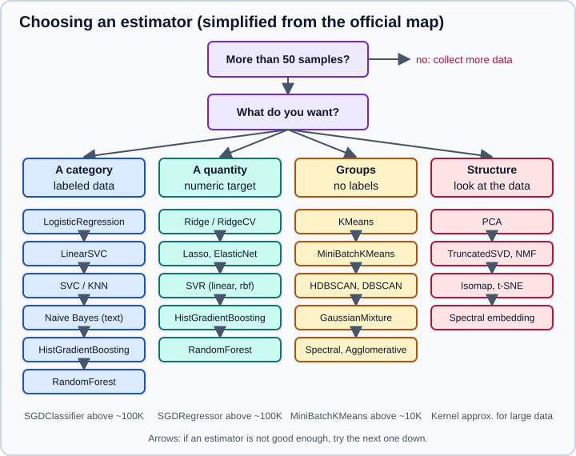

Choosing the Right Estimator in scikit-learn
|
This content was generated with the assistance of AI and should be verified against the official documentation before being relied on in production. |
scikit-learn has dozens of classifiers, regressors and clusterers, and the most common beginner question is which one to use. The official documentation answers with a flowchart, the "Choosing the right estimator" map, that it describes as a rough guide rather than a definitive method. This page explains the map, turns it into rules you can apply, shows how to check the rules against your own data with a fair comparison, and points out the places where the map is dated. It targets scikit-learn 1.9 (1.9.1) with NumPy 2.5 and pandas 3.1 and was checked in October 2026; every example was run with Python 3.13 and scikit-learn 1.9.1, and the printed output is the real output. Examples target Python 3.13 or 3.14 and were run on Python 3.13. The vocabulary used here (estimator, transformer, scorer, splitter) is explained in the Glossary of Key Terms, and the problem types themselves in Machine Learning Fundamentals.
What the official map says
The map starts with a gate: with fewer than about 50 samples, get more data. Any model fitted on a handful of rows is mostly noise. After the gate it asks what you want to predict, and there are four answers.
-
A category (classification). With labeled data and fewer than about 100K samples, try
LinearSVCfirst. If it does not work well, the next steps depend on the kind of data: text data goes to naive Bayes, other data goes toKNeighborsClassifierand thenSVCand the ensemble classifiers. With more than 100K samples the map usesSGDClassifier, then kernel approximation. -
A quantity (regression). With fewer than about 100K samples, ask whether only a few features are expected to be important. If yes, try
LassoandElasticNet; if no,RidgeandSVR(kernel="linear"), followed bySVR(kernel="rbf")and the ensemble regressors. With more data,SGDRegressor. -
Groups with no labels (clustering). If the number of groups is known, use
KMeansfor fewer than about 10K samples andMiniBatchKMeansbeyond that, with spectral clustering and Gaussian mixtures as the next tries. If the number is unknown, try mean shift or a variational Gaussian mixture; with more than about 10K samples and an unknown number of groups the map says "tough luck". -
Just looking at the data (dimensionality reduction). Start with PCA (the map calls it randomized PCA), then kernel approximation,
Isomap, spectral embedding and locally linear embedding.
Predicting structure (sequences, trees, graphs) is outside scikit-learn and the map says so. The orange "try next"
arrows mean that if an estimator does not achieve the outcome you want, you follow the arrow to the next one. The chart is
interactive on the website (zoom, pan, click any estimator to open its page) and can be downloaded as ml_map.svg.

The figure is a simplification and an update: it keeps the structure of the official map, replaces the class names that
no longer exist (see Where the map is dated), and adds HistGradientBoostingClassifier and
HistGradientBoostingRegressor, which are today’s strongest default for tabular data.
A practical order of attack
The map is a starting point. In practice the decision is made by measurement, in this order.
-
Fix the metric and the splitter first. Decide what "better" means (accuracy, area under the ROC curve, RMSE, a cost) and build one cross-validation splitter with a fixed
random_state. Every candidate must be scored with the same metric and the same folds, otherwise the comparison is meaningless. See Cross-Validation and Splitters and Metrics and Scoring. -
Fit a baseline.
DummyClassifierandDummyRegressorpredict from the class prior or the mean. Any model that does not clearly beat them is not learning anything. -
Try a simple, scaled, linear model. Logistic regression for classification, ridge for regression. They are fast, hard to break and give a reference that is easy to explain.
-
Try one strong nonlinear model.
HistGradientBoostingClassifierorHistGradientBoostingRegressorhandles missing values and categorical columns natively, needs no scaling and scales to millions of rows. -
Add specialised candidates only when the data suggests them: SVMs for small or medium, high-dimensional data, nearest neighbours for local structure, naive Bayes for text counts.
-
Tune the one or two best with a search (Grid, Randomized and Halving Search), on the training data only, and keep a final test set that you look at once.
-
Stop when the gain is smaller than the noise. The standard deviation across folds tells you how much two scores can differ by chance.
Classification
The following table says what each family is good at. Details are in the dedicated pages.
| Family | Use it when | Watch out for |
|---|---|---|
|
You want a fast, well-calibrated, interpretable baseline; features are roughly linear in the log-odds; many features. |
Needs scaled features; cannot learn interactions by itself. |
|
Very many samples or very many sparse features (text); you need speed. |
Not probabilistic by default; |
|
Up to tens of thousands of samples; nonlinear boundaries; high-dimensional data. |
Training time grows at least quadratically with the number of samples; needs scaling; |
|
Local structure, few features, you want no training step. |
Slow predictions on big data; distance is meaningless in many dimensions; needs scaling. |
Naive Bayes (Naive Bayes) |
Text counts, very small data, a tiny and fast baseline. |
Independence assumption; probabilities are overconfident. |
Trees and random forests (Decision Trees, Random Forests) |
Mixed features, interactions, no scaling wanted, feature importances. |
Single trees overfit; forests are large and cannot extrapolate. |
|
Tabular data, 10,000 samples or more, missing values, categorical columns, the best accuracy for the effort. |
More hyperparameters; early stopping is on by default only for larger data (see its page). |
The comparison below runs nine candidates on the breast-cancer dataset with one shared stratified splitter and the area under the ROC curve as metric. The baseline gives 0.5 by construction, the scaled linear models are already close to the best, and the differences between the top six are smaller than a standard deviation across folds. That is the typical picture on a small, clean dataset: choose the simplest model that is within noise of the best.
import pandas as pd
from sklearn.datasets import load_breast_cancer
from sklearn.dummy import DummyClassifier
from sklearn.ensemble import HistGradientBoostingClassifier, RandomForestClassifier
from sklearn.linear_model import LogisticRegression, SGDClassifier
from sklearn.model_selection import StratifiedKFold, cross_validate
from sklearn.naive_bayes import GaussianNB
from sklearn.neighbors import KNeighborsClassifier
from sklearn.pipeline import make_pipeline
from sklearn.preprocessing import StandardScaler
from sklearn.svm import SVC, LinearSVC
X, y = load_breast_cancer(return_X_y=True)
cv = StratifiedKFold(n_splits=5, shuffle=True, random_state=0)
candidates = {
"dummy (class prior)": DummyClassifier(strategy="prior"),
"logistic regression": make_pipeline(StandardScaler(), LogisticRegression()),
"linear SVC": make_pipeline(StandardScaler(), LinearSVC()),
"SVC (rbf)": make_pipeline(StandardScaler(), SVC()),
"k nearest neighbours": make_pipeline(StandardScaler(), KNeighborsClassifier()),
"Gaussian naive Bayes": GaussianNB(),
"SGD (hinge)": make_pipeline(StandardScaler(), SGDClassifier(random_state=0)),
"random forest": RandomForestClassifier(random_state=0),
"hist gradient boosting": HistGradientBoostingClassifier(random_state=0),
}
rows = []
for name, model in candidates.items():
scores = cross_validate(model, X, y, cv=cv, scoring="roc_auc")["test_score"]
rows.append((name, scores.mean(), scores.std()))
table = pd.DataFrame(rows, columns=["model", "auc_mean", "auc_std"]).set_index("model")
print(table.sort_values("auc_mean", ascending=False).round(3))Output with scikit-learn 1.9.1:
auc_mean auc_std
model
SVC (rbf) 0.996 0.005
logistic regression 0.995 0.006
hist gradient boosting 0.994 0.005
linear SVC 0.993 0.006
random forest 0.992 0.007
SGD (hinge) 0.992 0.006
Gaussian naive Bayes 0.989 0.006
k nearest neighbours 0.981 0.009
dummy (class prior) 0.500 0.000Regression
| Family | Use it when | Watch out for |
|---|---|---|
|
A baseline; many correlated features (ridge shrinks them together). |
Scale features; check residuals; ordinary least squares is unstable under collinearity. |
|
You expect only a few relevant features and want a sparse model. |
Scale features; Lasso picks one of several correlated features arbitrarily. |
|
Small to medium data with nonlinear structure. |
Scale features, and the target when its range is far from one; training is slow beyond tens of thousands of rows. |
|
More than about 100K samples. |
Sensitive to feature scale and to the learning rate schedule. |
|
Counts, positive skewed amounts, insurance-style data. |
The link is a log, so coefficients are multiplicative effects. |
|
Prediction intervals, outliers in the target. |
|
Forests and |
Interactions and nonlinearities on tabular data. |
They cannot extrapolate beyond the training range of the target. |
On the diabetes dataset the picture is different from classification: the regularised linear models win, and the tree-based models, which need more data than 442 rows to shine, come after them. The map’s advice (Lasso and ElasticNet if only a few features matter, otherwise Ridge, then SVR, then ensembles) matches the result.
import numpy as np
import pandas as pd
from sklearn.datasets import load_diabetes
from sklearn.dummy import DummyRegressor
from sklearn.ensemble import HistGradientBoostingRegressor, RandomForestRegressor
from sklearn.linear_model import ElasticNetCV, LassoCV, RidgeCV
from sklearn.model_selection import KFold, cross_validate
from sklearn.pipeline import make_pipeline
from sklearn.preprocessing import StandardScaler
from sklearn.svm import SVR
X, y = load_diabetes(return_X_y=True)
cv = KFold(n_splits=5, shuffle=True, random_state=0)
candidates = {
"dummy (mean)": DummyRegressor(),
"ridge": make_pipeline(StandardScaler(), RidgeCV(alphas=np.logspace(-3, 3, 13))),
"lasso": make_pipeline(StandardScaler(), LassoCV()),
"elastic net": make_pipeline(StandardScaler(), ElasticNetCV(l1_ratio=[0.1, 0.5, 0.9], max_iter=5000)),
"SVR (linear)": make_pipeline(StandardScaler(), SVR(kernel="linear", C=10)),
"SVR (rbf)": make_pipeline(StandardScaler(), SVR(C=100)),
"random forest": RandomForestRegressor(random_state=0),
"hist gradient boosting": HistGradientBoostingRegressor(random_state=0),
}
rows = []
for name, model in candidates.items():
result = cross_validate(model, X, y, cv=cv, scoring=["r2", "neg_root_mean_squared_error"])
rows.append((name, result["test_r2"].mean(), -result["test_neg_root_mean_squared_error"].mean()))
table = pd.DataFrame(rows, columns=["model", "r2", "rmse"]).set_index("model")
print(table.sort_values("rmse").round(3))Output with scikit-learn 1.9.1:
r2 rmse
model
elastic net 0.488 54.602
lasso 0.487 54.643
ridge 0.487 54.649
SVR (linear) 0.475 55.219
SVR (rbf) 0.444 56.421
random forest 0.419 58.249
hist gradient boosting 0.398 59.017
dummy (mean) -0.001 76.930Source: Linear models, SVM regression and Ensembles.
Clustering
Clustering has no ground truth, so choosing is even more a matter of the shape of your clusters and of what you will do with the result.
| Estimator | Use it when | Watch out for |
|---|---|---|
|
Roughly round clusters of similar size, the number of clusters is known, fewer than about 10K samples. |
You must pick |
|
The same, with many more samples. |
Slightly worse clusters in exchange for speed. |
|
Arbitrary shapes, noise points, unknown number of clusters. |
|
|
A hierarchy, small data, a choice of linkage. |
Memory grows with the square of the samples. |
|
Soft assignments and elliptical clusters. |
Local optima; choose the covariance type. |
|
Non-convex clusters in small data. |
Slow; needs an affinity. |
The example generates three blobs of different spread and scores each algorithm against the generating labels with the
adjusted Rand index (ARI, 1.0 is a perfect match). The two k-means variants are perfect because the clusters are round and
the number is known; the density-based ones mark the sparse border points as noise (label -1), which costs them a little
ARI.
from sklearn.cluster import DBSCAN, HDBSCAN, KMeans, MiniBatchKMeans
from sklearn.datasets import make_blobs
from sklearn.metrics import adjusted_rand_score
X, truth = make_blobs(n_samples=600, centers=3, cluster_std=[1.0, 1.5, 0.5], random_state=7)
candidates = {
"KMeans": KMeans(n_clusters=3, random_state=0),
"MiniBatchKMeans": MiniBatchKMeans(n_clusters=3, random_state=0),
"DBSCAN": DBSCAN(eps=0.8),
"HDBSCAN": HDBSCAN(copy=True),
}
for name, model in candidates.items():
labels = model.fit_predict(X)
clusters = len(set(labels) - {-1}) # -1 marks noise
noise = int((labels == -1).sum())
print(f"{name:16s} clusters={clusters} noise={noise:2d} ARI={adjusted_rand_score(truth, labels):.3f}")Output with scikit-learn 1.9.1:
KMeans clusters=3 noise= 0 ARI=1.000
MiniBatchKMeans clusters=3 noise= 0 ARI=1.000
DBSCAN clusters=3 noise=18 ARI=0.956
HDBSCAN clusters=3 noise= 7 ARI=0.983Source: Clustering and sklearn.cluster.HDBSCAN.
Dimensionality reduction and structure
When the goal is to look at the data or compress it, not to predict, choose by what you need to preserve.
-
Variance, linearly and fast:
PCA(randomized solver for large data),IncrementalPCAwhen the data does not fit in memory,TruncatedSVDfor sparse matrices (it does not centre). -
Non-negative parts:
NMFfor count-like data such as word counts. -
Nonlinear structure for visualisation:
TSNEfor two-dimensional pictures (not for downstream models),Isomap,SpectralEmbedding,LocallyLinearEmbedding. -
Approximating a kernel:
NystroemandRBFSamplergive an explicit feature map that lets a linear model emulate a kernel model on large data.
Beyond size: what else decides
Sample count is the only axis the map shows, but three other properties of your data often decide the shortlist.
Sensitivity to feature scale
Estimators that use distances or gradients (SVC, KNeighborsClassifier, LogisticRegression with regularisation,
SGDClassifier, PCA, KMeans) give different answers when features are on different scales, and regularised ones
shrink the large-unit features less. Trees and forests split on one feature at a time and do not care. The example
multiplies each breast-cancer column by a different factor between 1 and 1000 and compares the cross-validated accuracy
without and with a StandardScaler inside a pipeline.
Missing values, sparse data and categorical columns
Whether an estimator accepts NaN or a sparse matrix is declared by its tags. The second part of the example prints it:
forests and the histogram-based boosting accept missing values directly, while LogisticRegression, SVC and
KNeighborsClassifier need an imputer first
(Imputing Missing Values). HistGradientBoostingClassifier is the only
one of these that does not accept a sparse matrix. Categorical columns need an encoder,
except in HistGradientBoosting*, which supports them natively
(Encoding Categorical Features).
import numpy as np
from sklearn.datasets import load_breast_cancer
from sklearn.ensemble import HistGradientBoostingClassifier, RandomForestClassifier
from sklearn.linear_model import LogisticRegression
from sklearn.model_selection import cross_val_score
from sklearn.neighbors import KNeighborsClassifier
from sklearn.pipeline import make_pipeline
from sklearn.preprocessing import StandardScaler
from sklearn.svm import SVC
from sklearn.utils import get_tags
X, y = load_breast_cancer(return_X_y=True)
X_skewed = X * np.linspace(1, 1000, X.shape[1]) # features on very different scales
for name, make in {
"SVC": lambda: SVC(),
"KNN": lambda: KNeighborsClassifier(),
"logistic regression": lambda: LogisticRegression(max_iter=5000),
"random forest": lambda: RandomForestClassifier(random_state=0),
}.items():
raw = cross_val_score(make(), X_skewed, y, cv=5).mean()
scaled = cross_val_score(make_pipeline(StandardScaler(), make()), X_skewed, y, cv=5).mean()
print(f"{name:20s} raw={raw:.3f} scaled={scaled:.3f}")
print()
for estimator in (LogisticRegression(), SVC(), KNeighborsClassifier(), RandomForestClassifier(), HistGradientBoostingClassifier()):
tags = get_tags(estimator)
print(f"{type(estimator).__name__:32s} accepts NaN: {tags.input_tags.allow_nan!s:5s} accepts sparse: {tags.input_tags.sparse}")Output with scikit-learn 1.9.1:
SVC raw=0.916 scaled=0.974
KNN raw=0.921 scaled=0.965
logistic regression raw=0.968 scaled=0.981
random forest raw=0.963 scaled=0.963
LogisticRegression accepts NaN: False accepts sparse: True
SVC accepts NaN: False accepts sparse: True
KNeighborsClassifier accepts NaN: False accepts sparse: True
RandomForestClassifier accepts NaN: True accepts sparse: True
HistGradientBoostingClassifier accepts NaN: True accepts sparse: FalseSource: Preprocessing data and Histogram-based gradient boosting.
The run also prints a ConvergenceWarning ("lbfgs failed to converge after 5000 iteration(s)") for logistic regression
on the raw features: the solver cannot converge when the columns differ in scale by a factor of 1000, which is one more
reason to scale. The scaled pipeline converges without a warning.
Interpretability, probabilities and latency
-
Need to explain the model to a person? Prefer linear models, shallow trees and generalised additive structure, and use permutation importance and partial dependence on the rest.
-
Need calibrated probabilities? Logistic regression is usually close; SVMs, forests and naive Bayes need calibration.
-
Need low-latency prediction? Linear models and shallow trees are fastest; k-nearest neighbours and large forests pay at prediction time. See Performance and Parallelism.
Size thresholds, with caution
The numbers in the map (50, 10K, 100K samples) are rules of thumb from an older generation of hardware and of implementations. Treat them as orders of magnitude:
| Samples | Typical consequence |
|---|---|
Fewer than about 50 |
Collect more data or simplify the question. Cross-validation estimates are very noisy. |
Up to about 10,000 |
Everything is cheap. Compare many families; SVMs and k-means are comfortable. |
10,000 to 100,000 |
|
Above 100,000 |
Prefer |
The SVC documentation states that the fit time scales at least quadratically with the number of samples and "may be
impractical beyond tens of thousands of samples", and recommends LinearSVC or SGDClassifier, possibly after
Nystroem, for larger data. That is consistent with the map.
Discovering what exists
You do not have to memorise the catalogue. sklearn.utils.all_estimators lists every public estimator of a kind,
which is handy for exploring an unfamiliar version or for programmatic comparisons.
from sklearn.utils import all_estimators
for kind in ["classifier", "regressor", "cluster", "transformer"]:
found = all_estimators(type_filter=kind)
print(f"{kind:12s} {len(found):3d} first five: {[name for name, _ in found[:5]]}")Output with scikit-learn 1.9.1:
classifier 44 first five: ['AdaBoostClassifier', 'BaggingClassifier', 'BernoulliNB', 'CalibratedClassifierCV', 'CategoricalNB']
regressor 55 first five: ['ARDRegression', 'AdaBoostRegressor', 'BaggingRegressor', 'BayesianRidge', 'CCA']
cluster 12 first five: ['AffinityPropagation', 'AgglomerativeClustering', 'Birch', 'BisectingKMeans', 'DBSCAN']
transformer 84 first five: ['AdditiveChi2Sampler', 'BernoulliRBM', 'Binarizer', 'Birch', 'BisectingKMeans']Source: sklearn.utils.all_estimators.
The counts include meta-estimators (such as CalibratedClassifierCV) and change between releases.
Where the map is dated
The official map is useful but old, and the SVG still carries names of classes that were removed years ago. Do not copy them literally.
| On the map | Today |
|---|---|
GMM, VBGMM |
|
Randomized PCA |
|
Kernel approximation |
|
Ensemble classifiers, ensemble regressors |
Start with |
No node for density-based clustering |
|
No node for imbalanced classes, thresholds or calibration |
See Tuning the Decision Threshold and Probability Calibration |
Older books and tutorials add their own outdated choices. Treat any of the following as a sign that a tutorial predates
the current library: Imputer and LabelBinarizer in a preprocessing pipeline (2017), DataFrameSelector combined with
FeatureUnion instead of ColumnTransformer (before 0.20, 2018), fetch_mldata, the sklearn.cross_validation and
sklearn.grid_search modules (before 0.18, 2016), AdaBoost with algorithm="SAMME.R" (removed), and decision trees for
tabular data chosen without trying histogram boosting.
Pitfalls
-
Choosing on a single split. One train/test split has a large variance on small data. Use cross-validation and look at the standard deviation.
-
Different folds or metrics per candidate. Build the splitter once and reuse it, as in the examples.
-
Comparing a tuned model with untuned baselines. Give every serious candidate the same tuning budget.
-
Selecting by the test set. Every look at the test set uses it up. Keep it for one final evaluation.
-
Forgetting preprocessing inside the pipeline. Scale or impute inside a
Pipelineso each fold fits the transformer on its own training part only. -
Ignoring the cost of an error. Accuracy hides imbalanced costs; see Metrics and Scoring.
-
Treating the map as an oracle. It says which estimators are usually tried first, not which one wins on your data.